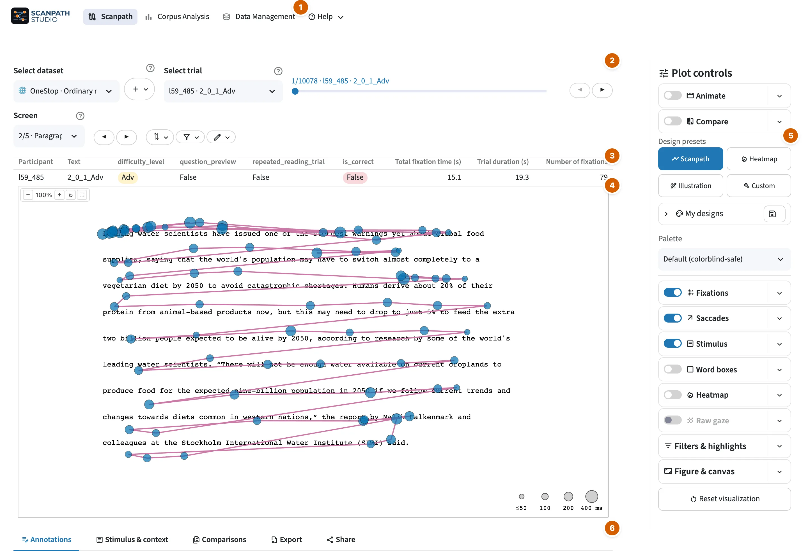

Scanpath visualization¶

- Views and Help.
- The trial control bar: dataset, trial, screen, sort (⇅) and filter ().
- The trial's summary.
- The figure.
- Plot controls.
- The tabs: Annotations, Stimulus & context, Comparisons, Export and Share.
The Scanpath view draws one reading at a time, at the size of the screen it was recorded on.
Looking for a specific button?
All controls lists every button and setting on this view, menu by menu, with a picture of each menu. Search it for what you want to change, such as saccade color or legend position.
Choose a trial¶
Pick a trial in Select trial above the plot, or step through the list with
◀ ▶. The filter () beside it narrows the list by text,
participant, condition or annotation, and ⇅ sorts it. On a trial recorded
over several screens, Screen picks the screen to draw. When several
participants have the same trial ID, the list shows each reading with its
participant in brackets, such as 3 [p2].
All controls → Trial control bar describes each control.
Control the layers¶
The Plot controls column, on the right of the plot, holds the figure's settings. Each layer has a row with a switch that turns it on or off and a ▾ that opens its settings.
| Section | What it controls |
|---|---|
| Animate | replay the fixations in the order they happened, at a speed you choose |
| Compare | draw a second reading over this one, beside it or below it |
| Design presets | restyle the whole figure in one click: Scanpath, Heatmap, Illustration, or Custom for your most recent settings |
| My designs | save the current settings as a design, apply it again in one click, or export your designs to share them or use them on another computer |
| Palette | one color scheme for the whole figure: Default (colorblind-safe), Print / grayscale or High contrast |
| Fixations | the fixation markers: color, shape and size, and the fixation index |
| Saccades | the saccade lines and arrows, in one color, by direction or by saccade type |
| Stimulus | the text (or redacted blocks), highlighted words, the stimulus image, the font and the background |
| Word boxes | each word's box: outline and fill, color and opacity |
| Heatmap | where fixations concentrate, by fixation count or duration |
| Raw gaze | the gaze samples as recorded |
| Filters & highlights | which fixations and saccades are drawn, and which stand out |
| Figure & canvas | screen framing, axes and grid, title and labels, hover fields and legends |
All controls → Plot controls describes every setting in each menu.
Under the plot¶
| Tab | What it is for |
|---|---|
| Annotations | Star, tag and write notes on the trial, to find or filter it later. |
| Stimulus & context | The trial's context, such as its title, question and answers, and its highlighted word spans. |
| Comparisons | Show the other trials that share a field with this one, such as other readings of the same text, in a grid of small figures. |
| Export | Download the figure on screen (PNG, SVG, PDF or HTML) or its replay (HTML, GIF or MP4), or build a zip bundle of figures and data for many trials. |
| Share | Link reopens this trial with these settings for anyone who has the same dataset. Code gives the Python or CLI code that redraws the figure. Settings file saves the plot settings and restores them. |
All controls → Under the plot lists each tab's controls.
Watch the tabs under the figure
Render in code¶
Set up a figure in the app, then open Share → Code for the Python or CLI code that redraws it. For a dataset you imported, replace the placeholder file paths with your own.
Python and CLI: render the demo
For your own files, use the data loaders. The figure options table lists every figure setting with its Python keyword and CLI flag. For more CLI examples, see Common tasks.
The gallery shows how to make heatmaps, comparisons, replays and other figures in the app, the CLI and Python. For batch export and GIF or MP4 replays, see Export and share.
Back up your work¶
You can save each of these to a file and load it again:
| What | Where |
|---|---|
| figure settings | Share → Settings file |
| favorites, tags and notes | Data Management → Annotations → Export |
| column mapping and recording setup | Edit dataset → Download setup file |
| saved figure designs | My designs → Export |
None of these files holds your data, so load the same data before you restore one. In the desktop app or a local install, the app also keeps your datasets, annotations and designs between sessions. See Data Management → Saved on this computer.